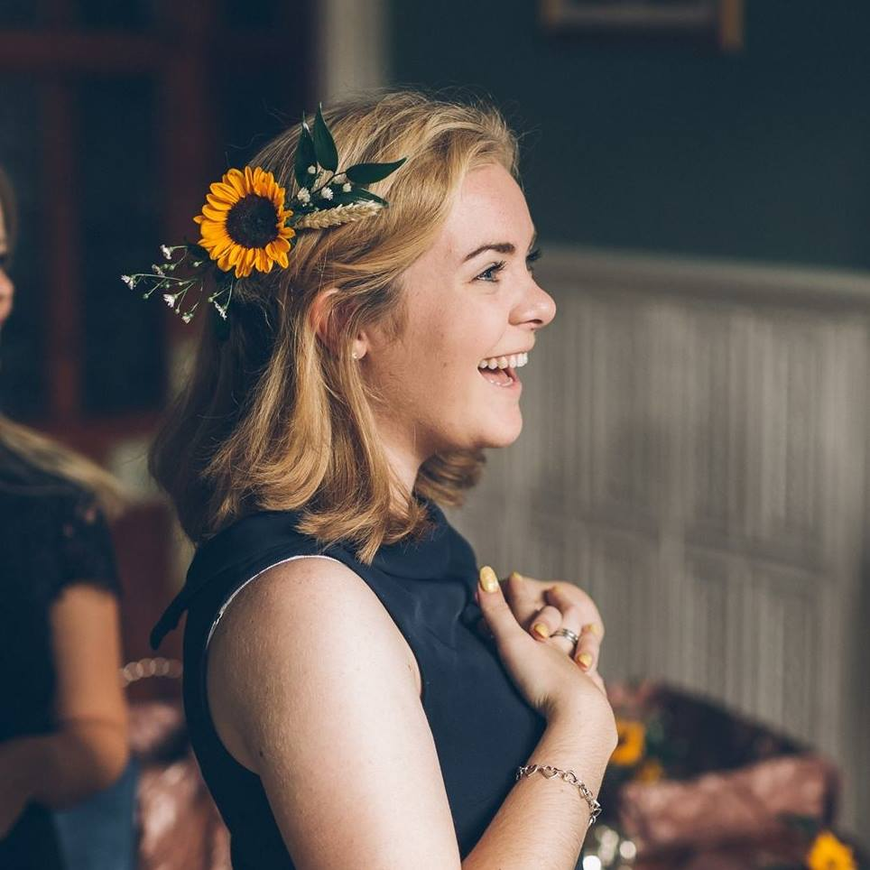

Hi, I'm Fiona
Work
Programmes and Engagement Manager | Code First Girls | 09/19 - Present
- ⭐ Coordinating all programmes across 50+ universities in the UK and Ireland
- ⭐ Onboarding volunteers, training all instructors in various curricula, and managing instructor participation and engagement
- ⭐ Working directly with students, from application through to certification
- ⭐ Organising an array of engagement events (panels, conferences, social events)
- ⭐ Leading a delivering on client mentoring schemes, including mentee confidence coaching, wellbeing, and career development.
- ⭐ Growing the engagement by 200%, resulting in 6500 women being trained in basic coding skills in the first six months of 2020.
Operations Assistant | YLD | 05/18 - 09/19
- ⭐ Organisational Structure Project Management
- ⭐ Internal events (organizing whole company offsite weekend for October 2018)
- ⭐ Creation of L&D curriculum
- ⭐ PA to the CEO, CFO and CCO.
Education
MA Education in Arts and Cultural Settings | King's College London | 2018
Studies in culture value, education, audience development, social inclusion, culture and identity, professional ethics, and the economics and 'social' value of art and culture.
🎓 Dissertation Title: A Broader Spectrum of Visitors: Making Museums and Cultural Heritage Sites More Accessible for Autistic Children
MA (Hons) Modern History | University of St Andrews | 2017
🎓 Dissertation Title: Who Lives, Who Dies, Who Tells Your Story? Hamilton, American Founding Historiography, and the Construction of Narrative
🏆 Awards: Honorary Life Membership of the University of St Andrews Students' Association.
Charity
Media
Volunteering
- ✨Mentoring young people ages 14-25 through their own Meningitis Journey via the Believe and Achieve programme
- ✨Giving talks at schools and workplaces on Meningitis and its after effects
Social